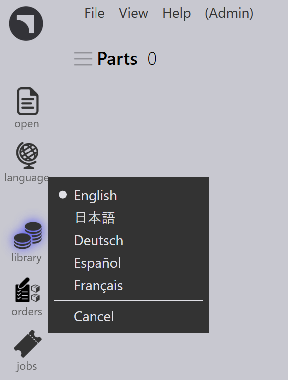

Kieli
Ohjelmisto tukee useita kieliä, jotka ovat käytettävissä napsauttamalla kieli-kuvaketta ja valitsemalla haluttu kieli saatavilla olevasta luettelosta.

Valittu kieli otetaan välittömästi käyttöön kaikissa valikoissa, valintaikkunoissa ja viesteissä.